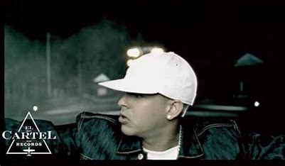

Un analisis del regueton en la Era digital
El reguetón, ese ritmo contagioso que ha conquistado las listas de éxitos globales, es más que una simple moda musical; es un fenómeno cultural que merece ser estudiado.Desde sus humildes comienzos en las calles de Panamá y Puerto Rico hasta su actual estatus de superestrella internacional, el reguetón ha experimentado una transformación notable hasta que hoy en dia es el genero mas escuchado en algunos paises.
Orígenes y Primeros Pasos
El reguetón se originó a principios de la década de 1990, fusionando el reggae en español con ritmos de hip-hop y dancehall1. Artistas como El General en Panamá y Vico C en Puerto Rico fueron pioneros, mezclando sonidos locales con influencias extranjeras para crear algo completamente nuevo.

Expansión y Popularización
A medida que el género ganaba popularidad, artistas como Daddy Yankee y Don Omar llevaron el reguetón a nuevas alturas en la década de 2000, con éxitos que resonaron tanto en Latinoamérica como en comunidades hispanohablantes en Estados Unidos. El ejemplo mas notorio de esto fue "Gasolina" de Daddy Yankeec convirtiendose en la primera cancion en la historia del reguetón en llegar a ocupar puestos altos en las listas musicales más importantes como el Hot Latin Songs, Billboard Hot 100 y el European Hot 100, además de ser la primera canción urbana en ser nominada a los Premios Grammy Latinos.
El Reguetón en la Era Digital
La era digital ha sido un catalizador para la expansión del reguetón, llevándolo a niveles de popularidad sin precedentes. Con la llegada de plataformas de streaming como Spotify, el regueton es mas disponible que nunca y los subcriptores de Spotify han tomado nota de ello.Por ejemplo durante tres años consecutivos el artista mas reproducido fue un reguetonero superando generos mas establecidos a nivel mundial como el Pop.
Album mas escuchado
Bad Bunny continuo rompiendo records cuando estreno su album "Un Verano sin Ti". Siendo el album mas escuchado en la historia de Spotify y alcanzando los primeros lugares en Latino America, Europa y Estados Unidos. Especialmente en Estados Unidos se conviertio en el primer album en español en acabar el año siendo el numero 1.